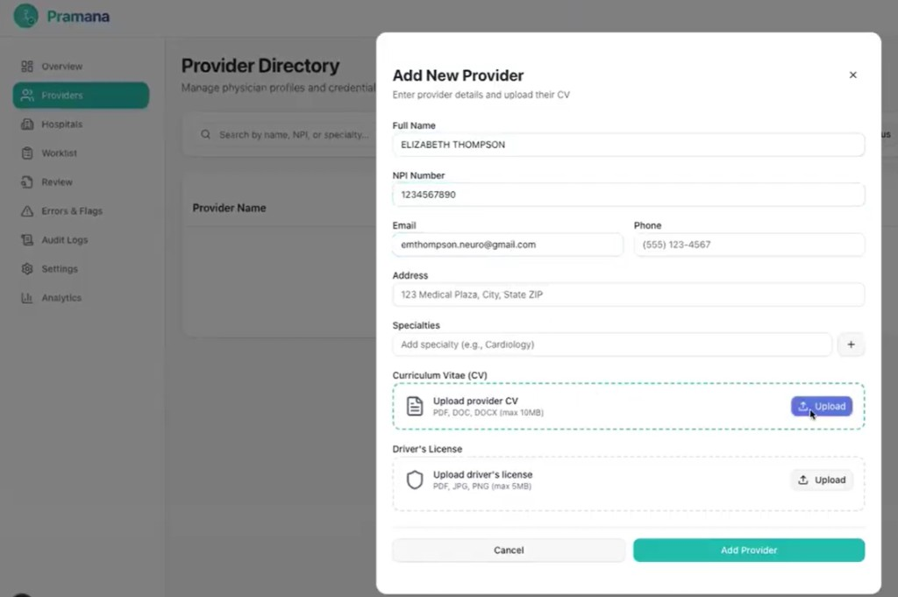
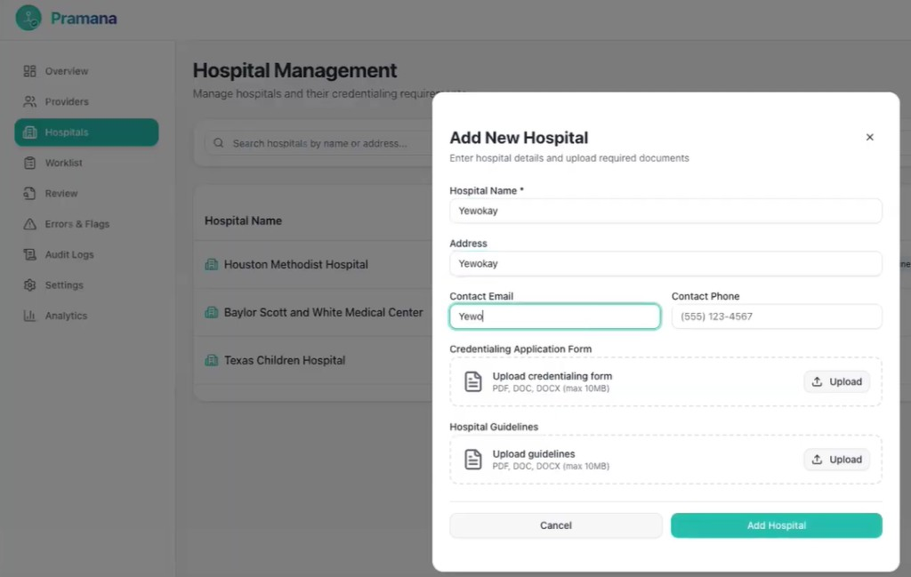
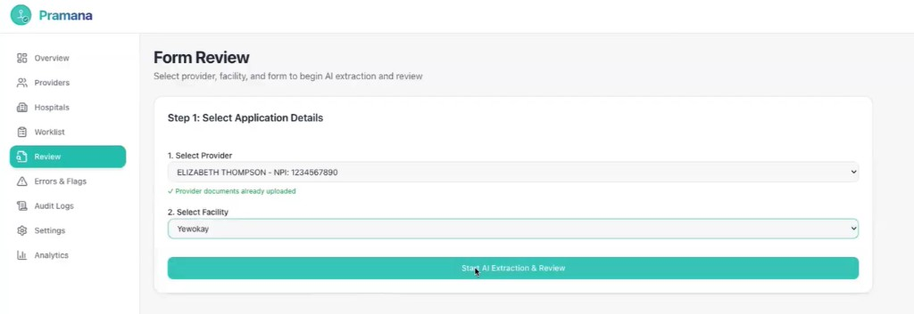
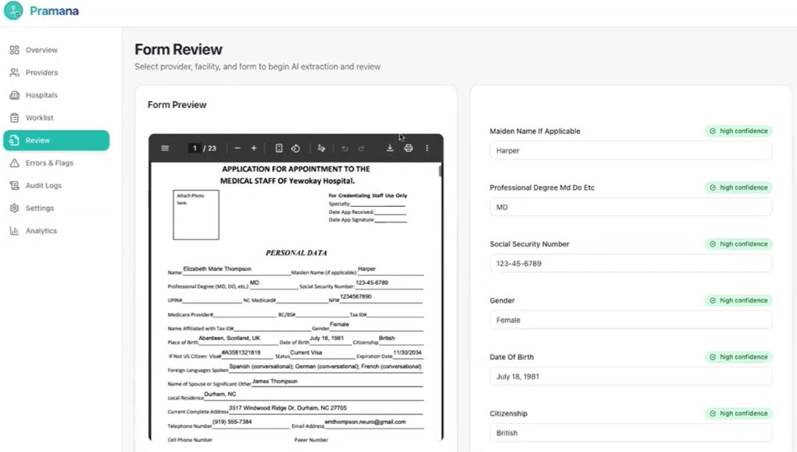

Overview
Our interdisciplinary team (medical, engineering, and business students) tackled the physician credentialing bottleneck: doctors apply to 150+ hospitals, manually re-entering identical data into non-integrated systems before they can begin their practice — delaying onboarding up to 1 year and costing $40K/mo in lost revenue per physician.
We built Pramana — TurboTax for credentialing: an AI agent that auto-extracts provider data from CVs, intelligently fills multi-state forms, and validates submissions — reducing 3-week processes to 5 days with 75% time savings. It was validated through physician interviews and Sevaro mentor consultation.
Core Contributions
Business Impact Strategy
Supported the development of the pitch deck and business plan, focusing on the financial impact of credentialing delays.
User Discovery & Pain Validation
Led physician interviews to validate credentialing friction; synthesized insights on form complexity, burnout, and access gaps that shaped the core product direction.
Front-End UX & User Flow
Contributed to the front-end UX design and user flow, translating physician pain points into an intuitive onboarding experience for the Pramana prototype.
Demo
A walkthrough of the Pramana prototype — from provider setup to AI-populated credentialing forms.
Demo built by Anish, Saketh, and Ahsan — our very strong engineering team. Thank you.

A physician profile can be created and their CV uploaded directly into the system — the foundation for AI-driven data extraction.

Hospitals can be created in the system with their specific credentialing forms and guidelines attached.

For a given physician, the hospitals where credentialing is needed can be selected — triggering the AI extraction and review process.

The final output: the credentialing form auto-populated from the physician's CV, with a confidence level shown for each field — flagging anything that needs human review.